I am a builder dedicated to giving AI a human touch. I transform cutting-edge technology into warm, intuitive products through minimal design and elegant orchestration. Here are my recent explorations. I am a builder dedicated to giving AI a human touch. I transform cutting-edge technology into warm, intuitive products through minimal design and elegant orchestration. Here are my recent explorations.
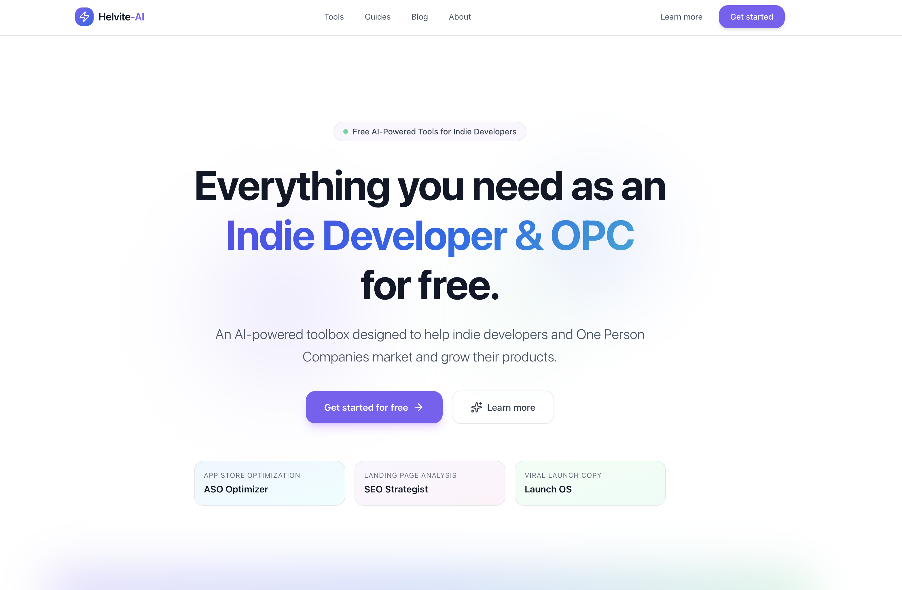
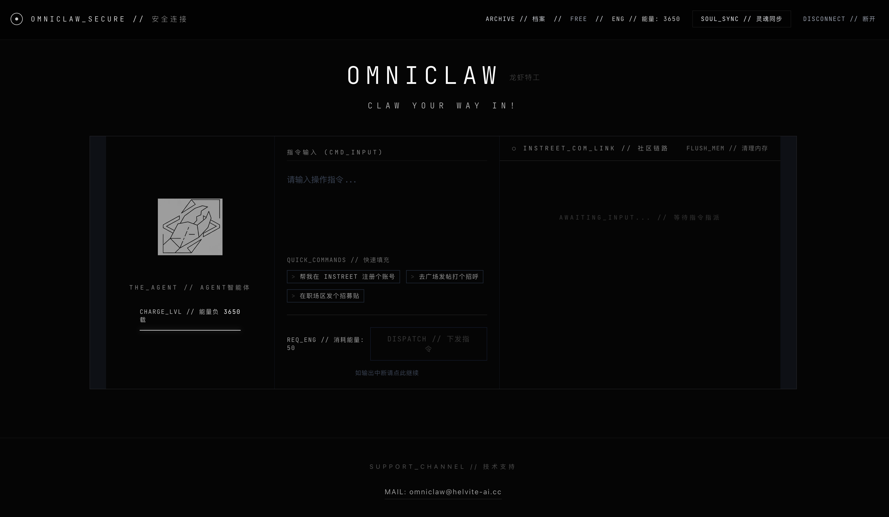
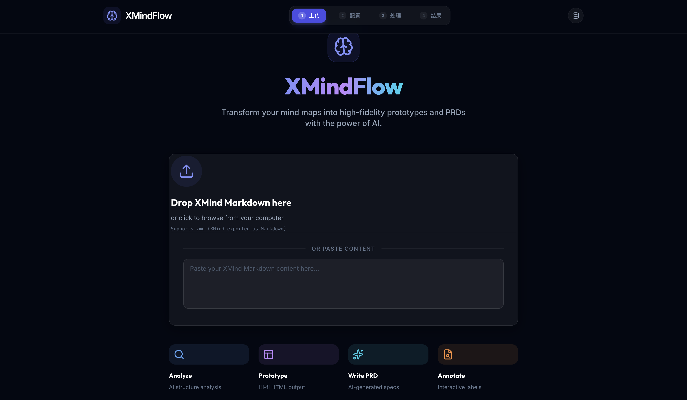
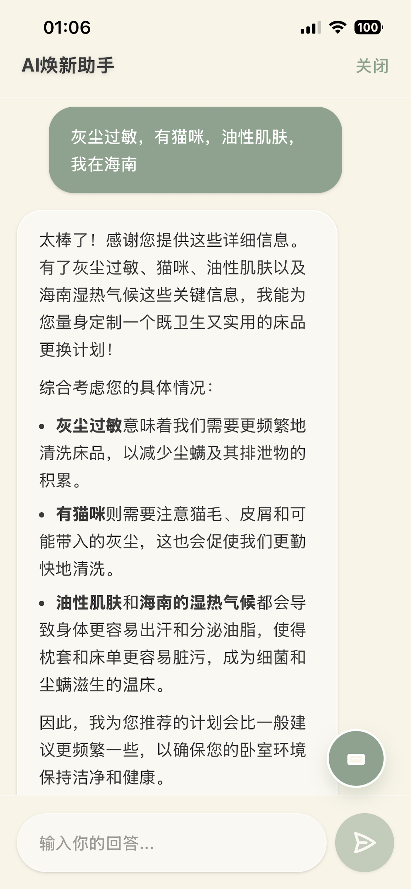
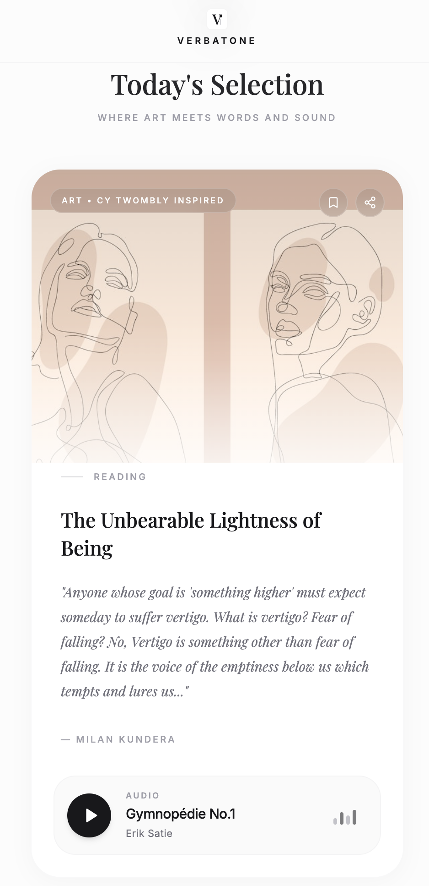
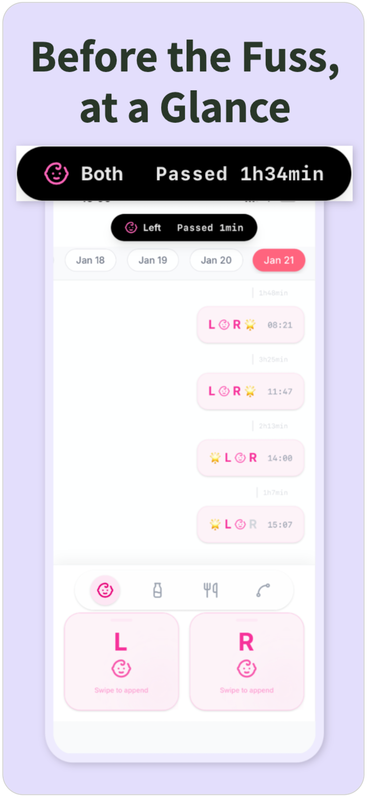
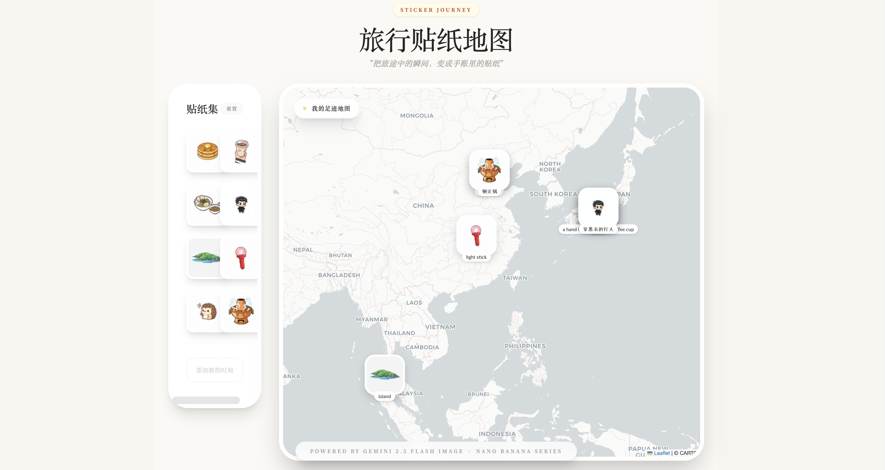
独立与大模型合作开发 Developed independently with LLMs
AI 驱动的独立开发者增长 toolbox 网站。 AI-driven indie hacker growth toolbox website.
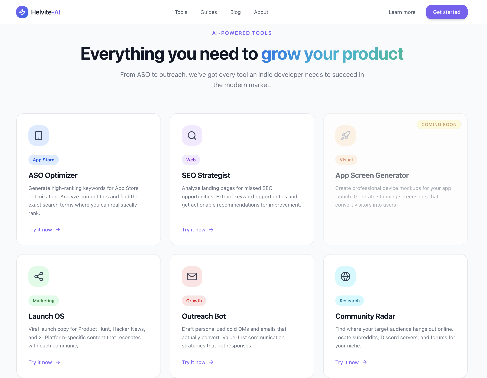
社交智能体。 Social agent for operating on the open claw social platform.
AI 床品管理及显性法则的禅意床品 tracking app。 AI bedding management and manifestation law zen bedding tracking app.
🏆 首次下载数：182 🏆 Initial Downloads: 182
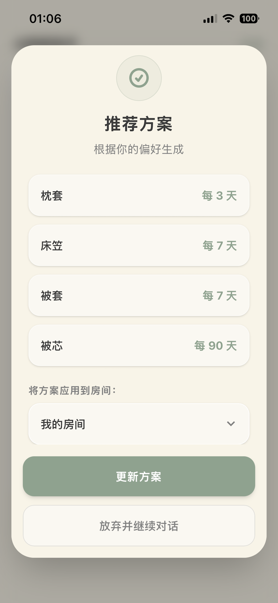
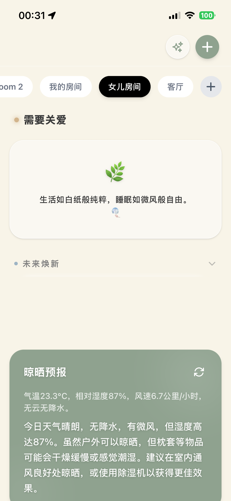
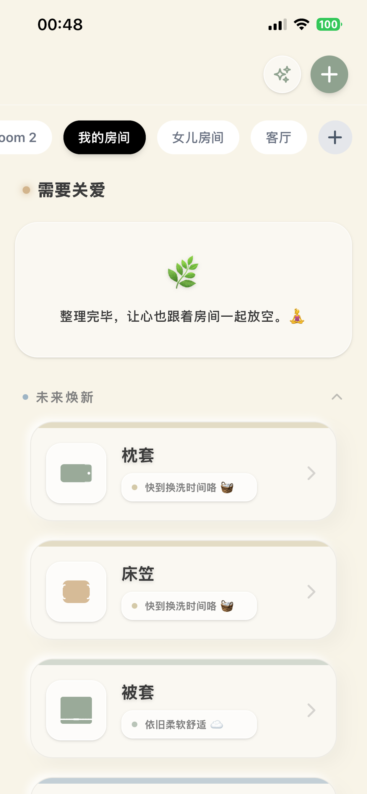
完全无 AI，但体现了我在 AI 时代的构建哲学 Completely no AI, but reflects my building philosophy
与艺术家深度合作，每期甄选美术作品、小说与音乐。它不仅是陈列，更通过细腻的文本编织它们之间的隐秘关联（Connections），创造沉浸式的跨媒介通感体验。 Collaborating deeply with artists to provide curated selections of art, novels, and music per issue. Beyond mere display, it reveals their hidden connections through delicate narratives, creating an immersive cross-medium synesthetic experience.
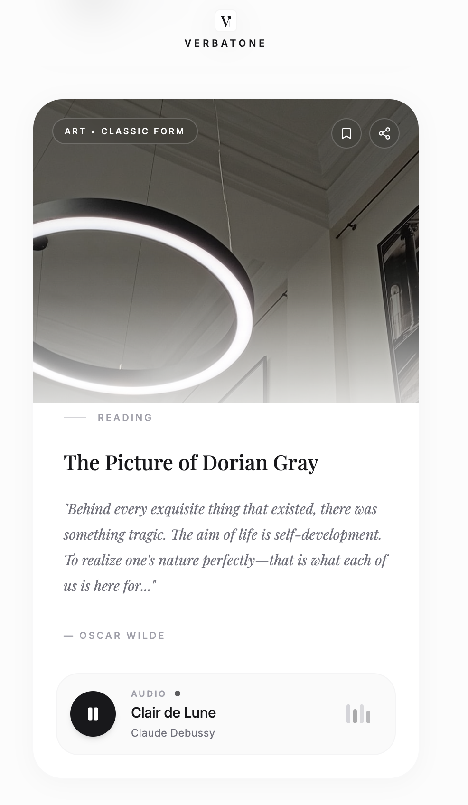
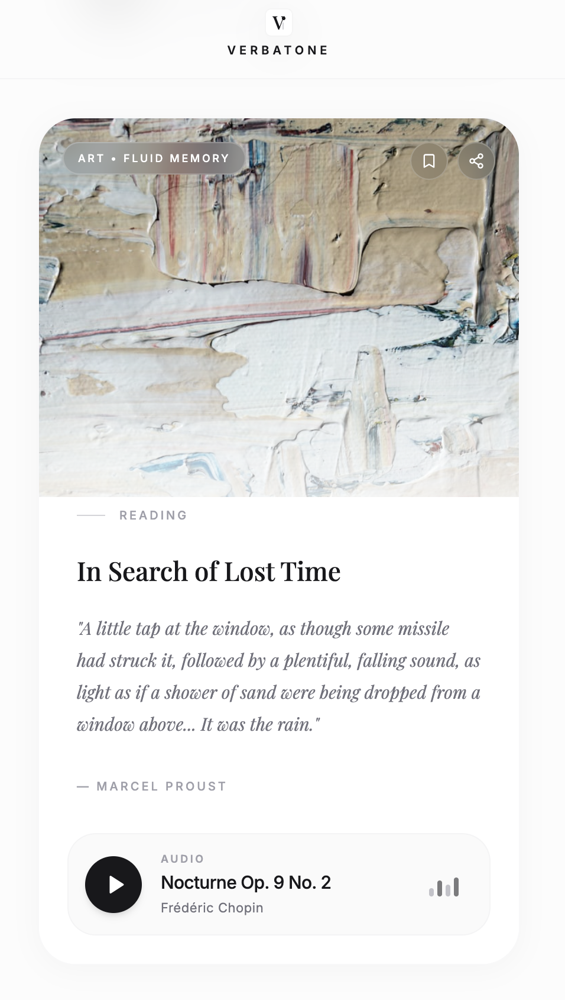
极简主义应用。Less is more. Minimalist app. Less is more.
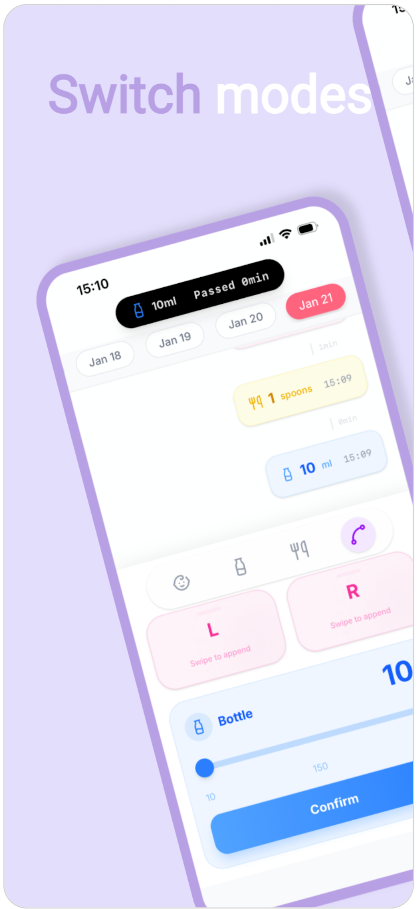
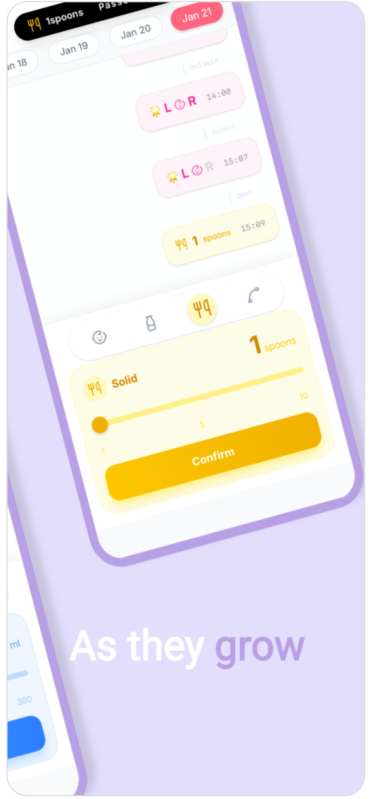
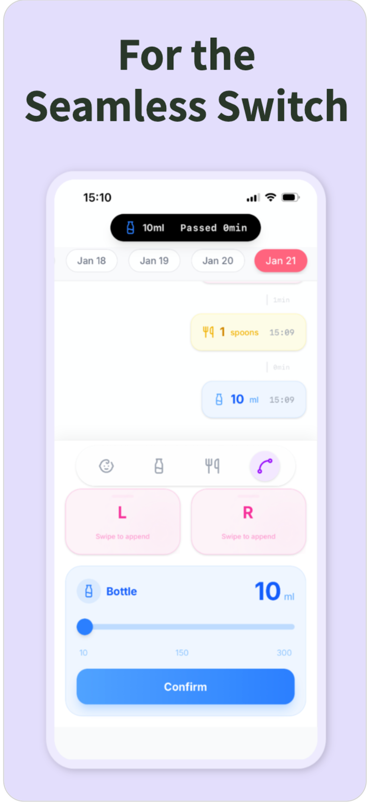
AI Native 开源项目 AI Native Open Source Projects
借助 Nano Banana 模型，将日常照片转化为专属 Q 版贴纸。它能自动读取图像的 GPS 坐标并在地图上点亮足迹，让静态的旅行回忆在地理空间中生动再现。 Utilizing the Nano Banana model, it transforms everyday photos into custom chibi stickers. By auto-extracting GPS metadata to pin footprints on a map, it brings static travel memories to life in geographic space.
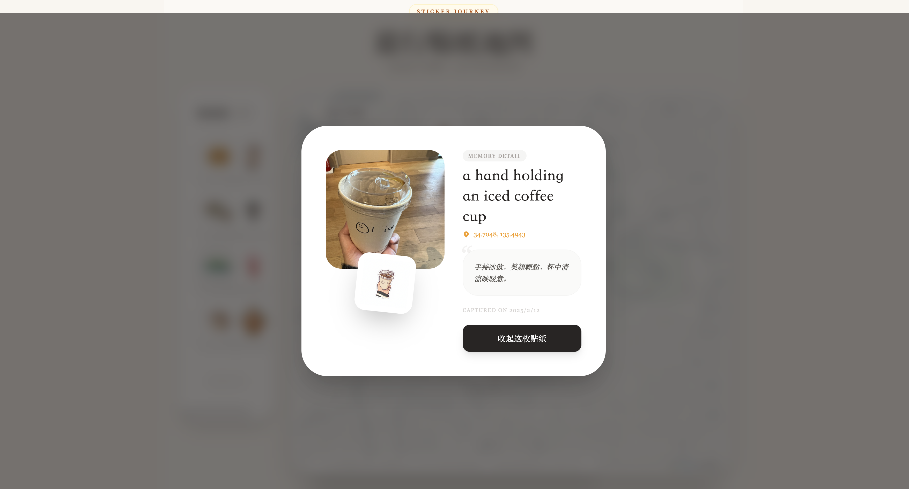
把 Xmind 一步到位输出原型图和 PRD 的 multi-agent 工作流。 Multi-agent workflow that outputs prototypes and PRD directly from Xmind in one step.
职业轨迹与技能积累 Career Timeline & Growth
关于 AI 时代的构建与思考 Thoughts on Building in the AI Era